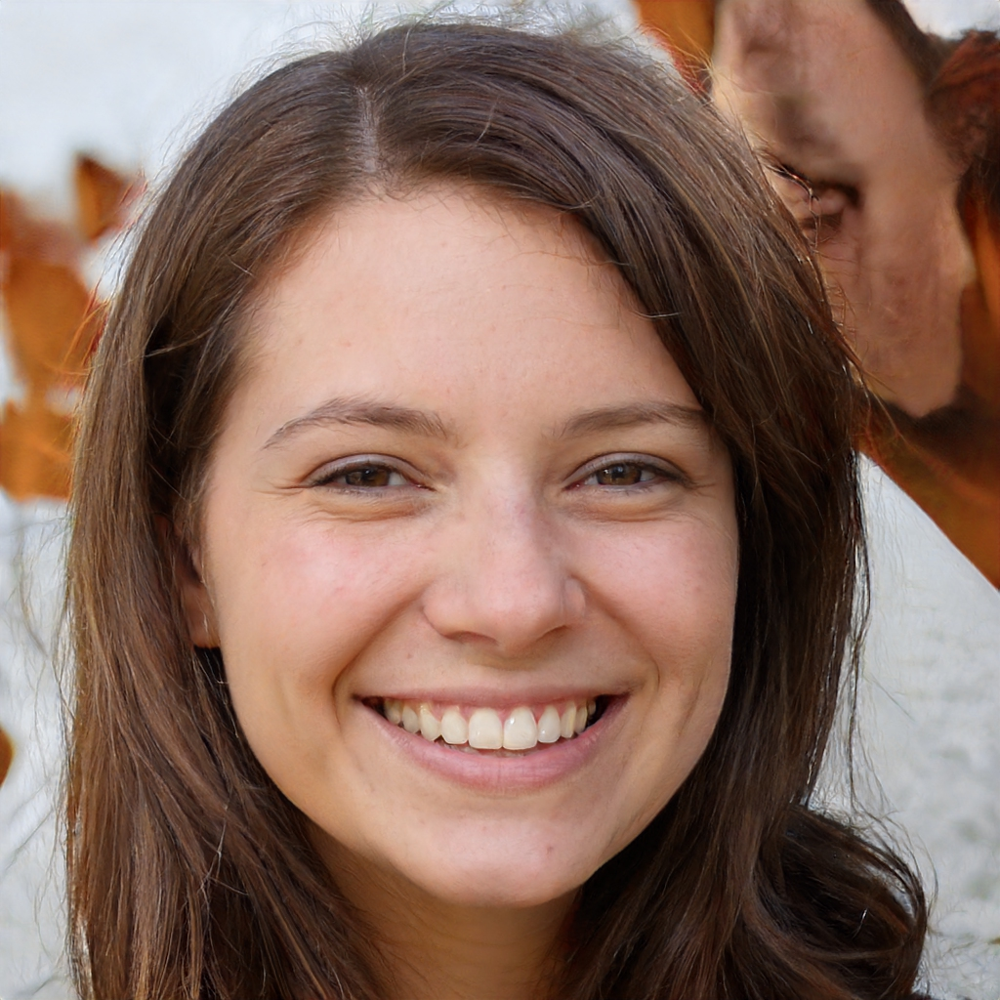
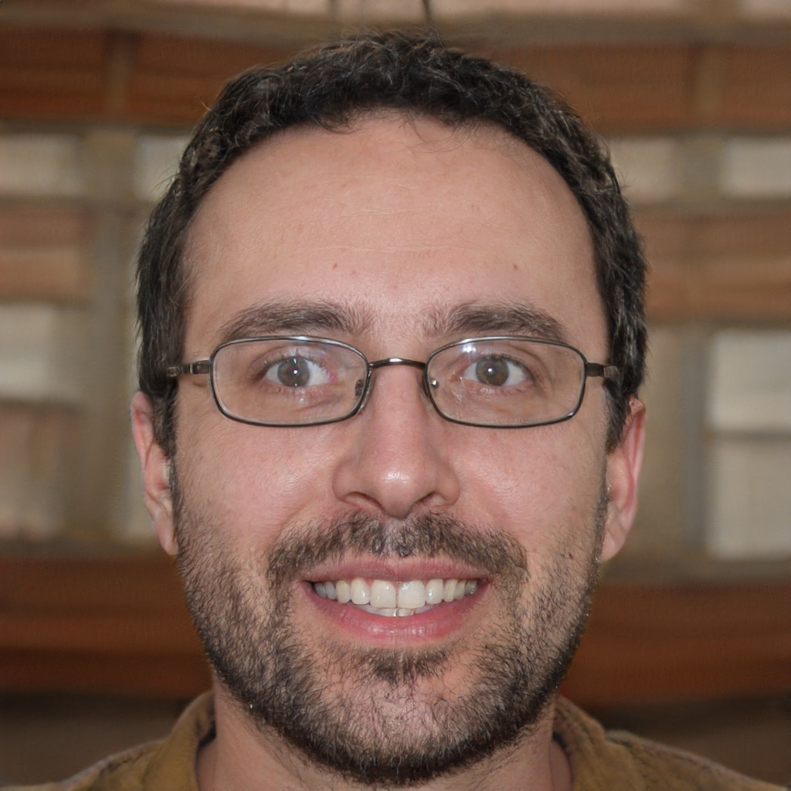
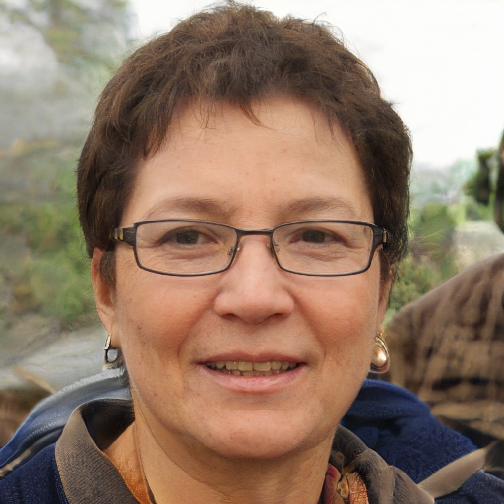
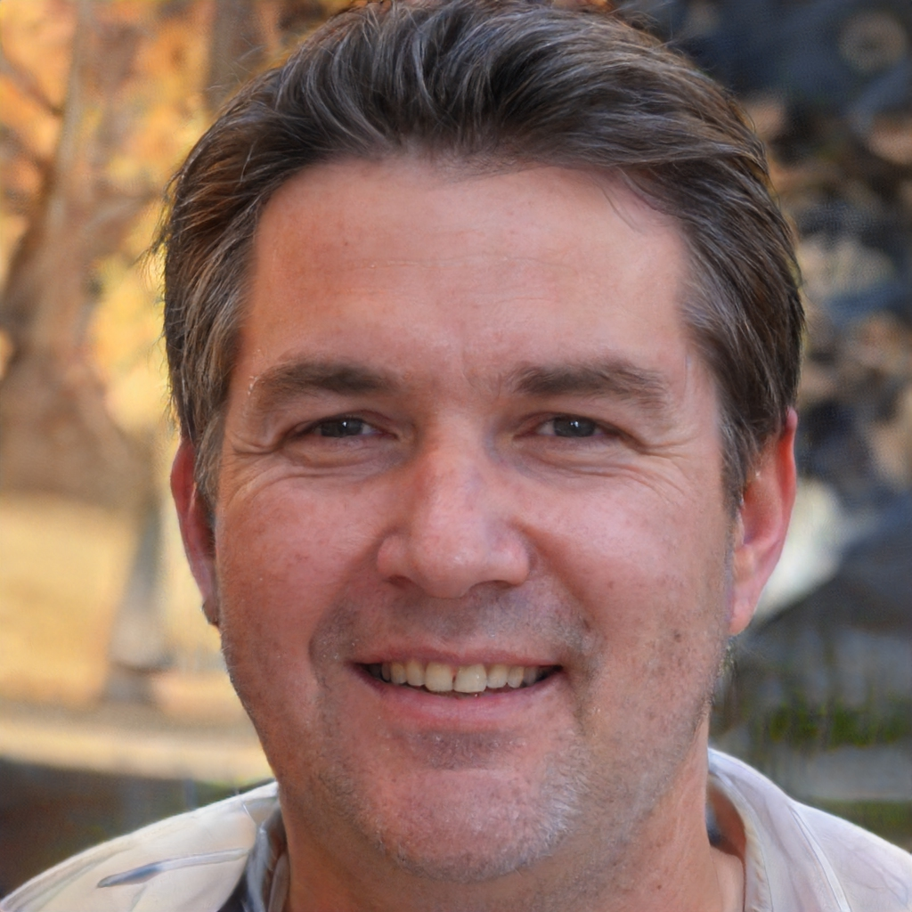

Lic. Magali Perossi

Psicologa infanto-juvenil
Lic. Juan Pablo Napoli

Psicologo de adultos
Lic. Maria Fernandez

Psicologa y psiquiatra
Lic. Franco Gonzalez

Psicopedagogo
Lic. Florencia Masarati

Psiquiatra
Lic. Sabrina Puig

Psicopedagoga